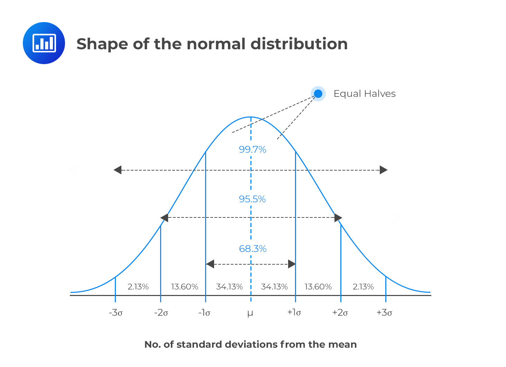
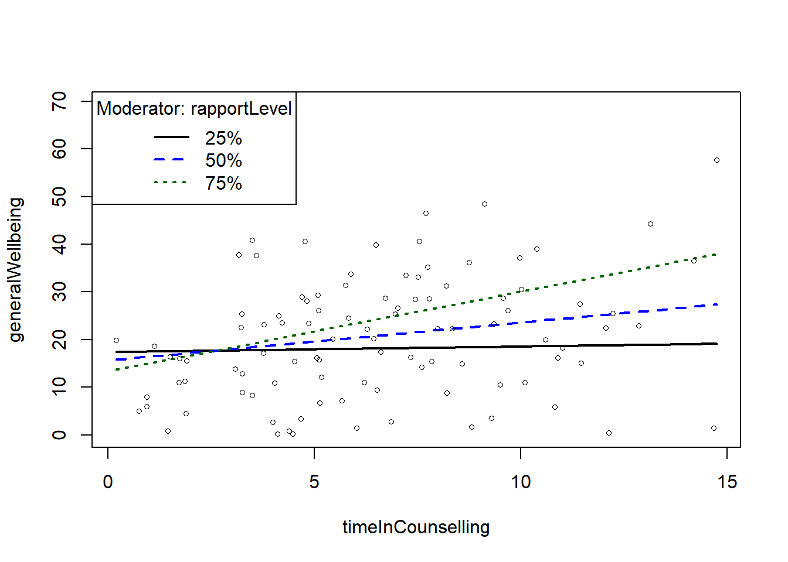

Section 3 Probability and hypothesis testing
3.1 We collect data from sample but we estimate about the population
One of the most important things to remember about hypothesis testing in statistics is why we use the approaches we do. That is, we need statistical approaches to test hypotheses because we can only collect data from samples of the population but our research questions and hypotheses apply to whole populations. For that reason, we need a way to estimate how well the sample reflects the population.
It is common for us to want to know what the mean (average) response of the population is on certain measures. For example, we might ask the question “what is the average score on this measure of happiness?”. In reality we can only measure a subset (sample) of the population, so we test as many people as we can. Below is a sample of 20 participants:
| participant | intervention | happiness |
|---|---|---|
| 1 | 1 | 9.525361 |
| 2 | 2 | 12.795897 |
| 3 | 2 | 10.111000 |
| 4 | 2 | 7.914403 |
| 5 | 2 | 10.315233 |
| 6 | 2 | 9.830578 |
| 7 | 2 | 10.933536 |
| 8 | 1 | 8.191924 |
| 9 | 1 | 8.928722 |
| 10 | 1 | 13.323887 |
| 11 | 1 | 9.452423 |
| 12 | 1 | 9.333168 |
| 13 | 1 | 8.438039 |
| 14 | 2 | 10.089532 |
| 15 | 2 | 11.938193 |
| 16 | 2 | 8.843243 |
| 17 | 2 | 9.953969 |
| 18 | 2 | 9.636162 |
| 19 | 2 | 10.083181 |
| 20 | 2 | 9.223007 |
3.2 Variance in sample data influences our confidence in population estimates
We can see from the table above that the mean of the sample is 9.943073. However, this is not to say that the population mean is 9.943073. For one thing, we can see that the range of scores in the sample is between 7.9144034 and 13.3238874. The standard deviation of the sample is 1.
The fact that there is so much variance from person to person within our sample indicates that we are likely to be incorrect if we assume that the sample mean is the same as the population mean. The more variance there is within the sample data, the less confident we can be that the sample mean is an accurate representation of the population mean.
Another thing that affects our ability to generalise from sample to population is that the sample size is only 20. Larger samples are less influenced by individual outliers, so the larger the sample size is, the more confident we can be that the sample mean is representative of the population mean (provided that the participant sample is representative of the population and recruited in a way to minimise bias).
The standard error of the mean can be calculated to estimate how far the mean of the sample data is likely to be from the true population mean. It uses the concepts of variance and sample size to make this estimate. Standard error is calculated by dividing standard deviation by the square root of the sample size (\(SE = \frac{SD}{\sqrt{\left[n\right]}}\))
In R, we can calculate the standard error of the happiness data like so:
standardError <- sd(happiness)/sqrt(length(happiness)) ## Calculate standard error
standardError #Display the standard error## [1] 0.3155453The standard error of our sample mean is 0.32. This suggests that using the sample mean is likely to be 0.32 away from the population mean.
3.3 We can use confidence intervals to make educated guesses about the population mean
Using the standard error, we can also create Confidence intervals, which are a range of values, within which the population mean is likely to fall. For example, we know from normal distribution that 95% of the population lies between +/- 1.96 standard deviations of the mean. If we use our sample mean (\(\bar{x}\)) in place of the population mean and include the standard error to account for errors in our estimate, we come up with the following formula for 95% confidence intervals of the mean:
Lower confidence interval = \(\bar{x} - 1.96*SE\)
Upper confidence interval = \(\bar{x} + 1.96*SE\)
## [1] 9.324604## [1] 10.56154
The value of 1.96 come from the normal distribution, where 95% of the population lies between +/- 1.96 standard deviations of the mean. If we did not already know this, we could use the qnorm() function in R to calculate the value:
# Calculate the number of standard deviations that contains 0% to 97.5% of the data (100% - 2.5%).
# We can then say that 95% of the data lies between + or - the answer:
qnorm(0.975)## [1] 1.959964However, with smaller samples, since we are less confident about generalising to the population, we use the t-distribution to calculate that value. The shape of a t-distribution changes based on the sample size, so the smaller the sample size is, the wider the range that 95% of values lie between. We can calculate the 95% value for a particular sample size in R using the qt() function:
## [1] 2.093024We can see that when we have a sample size of 20, 95% of values in our predicted population distribution will lie between + and - 2.0930241 standard deviations. Therefore, we can calculate more accurate confidence intervals using this value:
## [1] 9.282629## [1] 10.60352This tells us: if we were to take infinite number of similar samples, about 95% of their confidence intervals would contain the population mean. Therefore, we think it is reasonable to estimate that the population mean is somewhere in this range.
Often people say that a 95% confidence interval means that there is a 95% chance that the population mean is between the lower and upper confidence interval. This is not an accurate statement, but it is often used as a shorthand to help people conceptualise what confidence intervals are.
3.4 We can also make confidence intervals of differences between means
Often when we test hypotheses, we are testing the difference between two samples. For example, we might have 2 groups who have undergone different psychological interventions and want to know whether the difference we see our participant samples is likely to generalise to the population.
| participant | intervention | happiness |
|---|---|---|
| 1 | 1 | 9.525361 |
| 2 | 2 | 12.795897 |
| 3 | 2 | 10.111000 |
| 4 | 2 | 7.914403 |
| 5 | 2 | 10.315233 |
| 6 | 2 | 9.830578 |
| 7 | 2 | 10.933536 |
| 8 | 1 | 8.191924 |
| 9 | 1 | 8.928722 |
| 10 | 1 | 13.323887 |
| 11 | 1 | 9.452423 |
| 12 | 1 | 9.333168 |
| 13 | 1 | 8.438039 |
| 14 | 2 | 10.089532 |
| 15 | 2 | 11.938193 |
| 16 | 2 | 8.843243 |
| 17 | 2 | 9.953969 |
| 18 | 2 | 9.636162 |
| 19 | 2 | 10.083181 |
| 20 | 2 | 9.223007 |
Using the same approach as in the previous section, we can estimate a confidence interval based on the difference in means and the sample size:
# Calculate the number of standard deviations for 95% of the data
qt(0.975,df=20-2) # since there are 2 intervention groups, degrees of freedom is now 20-2## [1] 2.100922 group1 <- happinessSample %>% filter(intervention ==1) %>% summarise(mean = mean(happiness), sd= sd(happiness))
group2 <- happinessSample %>% filter(intervention ==2) %>% summarise(mean = mean(happiness), sd= sd(happiness))
# calculate mean of difference
meanDifference <- group1$mean - group2$mean
seDifference <- sqrt(((group1$sd^2)/19) + ((group2$sd^2)/19))
# calculate 95% CI of this
meanDifference - seDifference * qt(c(0.975), 20-2) # lower CI## [1] -1.554613## [1] 0.496157
This tells use that the 95% confidence interval of the difference is between -1.5546127 and 0.496157. An important part of interpreting this, is to notice whether any point between these values is equal to zero. If the confidence interval of a difference contains a zero value, this means that in future research, with similar samples, it would be possible to see zero difference between the groups. If, on the other hand, the confidence interval does not cross zero, then it is likely that in future research, with similar samples, we would see some difference between the means.
The fact of whether confidence intervals cross zero (or not) is linked directly to the idea of hypothesis testing and statistical significance.
3.5 The null hypothesis and statistical significance
Using the same study from the previous example: we know that the null hypothesis can be phrased as “in the population, there is no difference between groups”. We then see how the confidence interval of a difference can help us test the null hypothesis: if the null hypothesis were not true, then it is unlikely that the confidence interval of the difference would contain zero.
##
## Welch Two Sample t-test
##
## data: happiness by intervention
## t = -0.71807, df = 9.5251, p-value = 0.49
## alternative hypothesis: true difference in means is not equal to 0
## 95 percent confidence interval:
## -2.182574 1.124118
## sample estimates:
## mean in group 1 mean in group 2
## 9.599075 10.128303The con